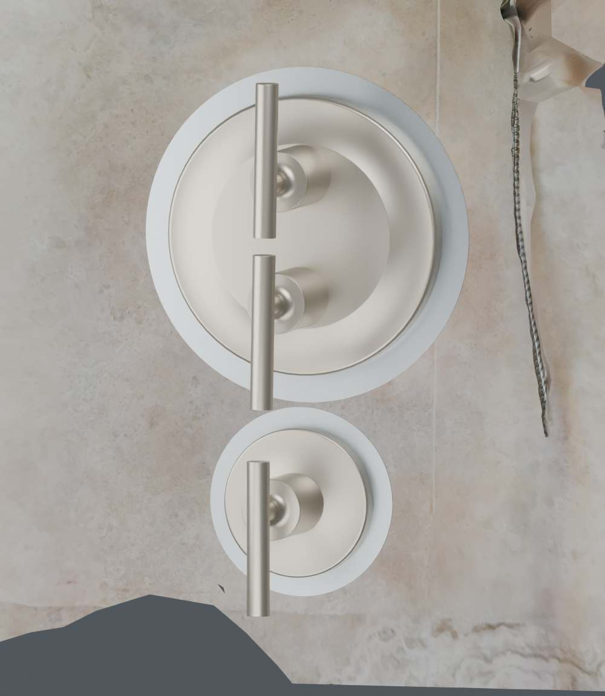
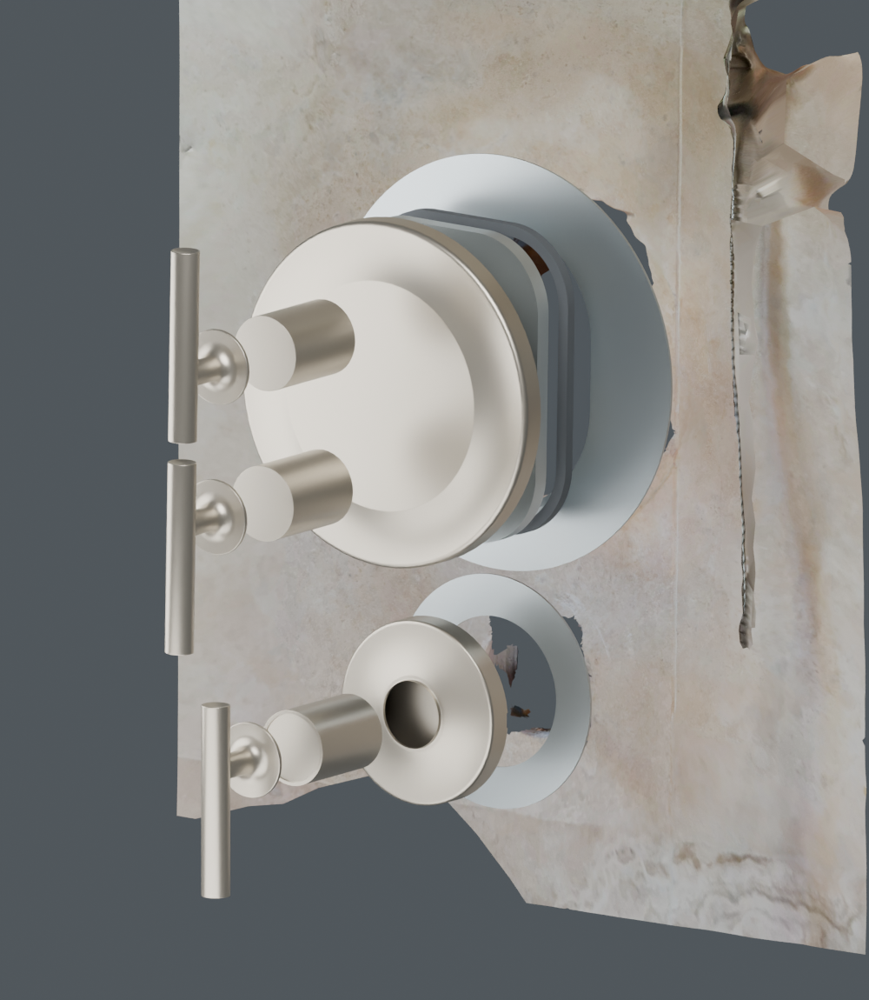
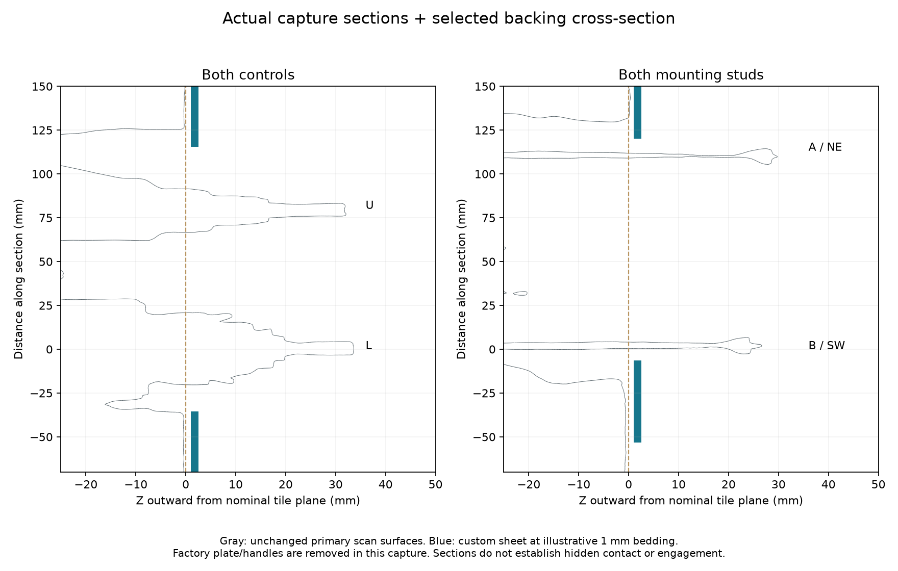

FT02 project home
A practical plate pair for the Kohler visit
Fit-trial release | Physical and permanent checks remain open
October 17: updated narrated explanation
Adding tabs does not move the foam or consume its support margin. The earlier comparison separately moved the whole backing. TR02 now tests longer loose slots and a modestly smaller opening, with both installed scans, handle access and the actual RF01 formwork. Watch the new narrated video and read the study. The historical tab rejection below describes the earlier candidates; the current order files have not been replaced.
One selected plain main profile and one diverter, with separate material routes. No additional owner measurement is requested.

Select plain upright capsule and a removable four-direction concentric gauge. R006 round-hole/slot tabs were evaluated at 6.4, 7 and 8 mm. Current captured shafts conflict near the seated A tab; current enlarged rod ends also obstruct insertion. Retraction/removal can remove the tip-path conflict but does not establish shaft/formed-plate plane registration. Widening locators adds more stack play than the 1 mm nominal inward gasket reserve. Plain access plus removable centering avoids making those uncertain rod axes an extra constraint.
Metal pair ZIP | Exact upload list | Clear alternative ZIP
Factory order and actual geometry


Exploded offsets show order, not installed dimensions. Factory reference shapes are approximate; custom parts come from the STEP solids.
Actual attached inner plate

Observed scan, kept separate from the proposed appearance. Manual wall-normal diagnostic and80 mm calibration are not independent scale validation. No forced registration or hidden engagement proof.
Pricing and timing
Ponoko private formal quotes, 16 October 2026: one main plus one diverter. Clear acrylic1.50 mm: $43.79 including ordinary delivery. #4 304 stainless1.52 mm: $80.47 including main linear deburring and ordinary delivery; diverter remains AS CUT. Tax is not separately shown; additional diverter finishing is not included. Both estimate26 October arrival (3 business-day production plus UPS Ground), subject to order timing.
Recommended first trial: clear acrylic at $43.79 because the remaining gasket/contact checks are easier to see and the metal diverter has no quoted deburring option. Metal is1.84x this price before that missing finishing. If a qualified finisher will smooth all diverter edges at acceptable cost, metal-first remains reasonable with the same selected geometry. Do not use an as-cut edge against tile or gasket. Both choices accept possible remake risk; neither is permanent-use approval.
Ponoko is preferred. Use the current draft quote for lead, shipping and cost; finish and tax must be checked before purchase.
Removable rear-fill form
Use the one-piece removable front form only if the trial shows missing support and the contractor verifies sound repair substrate/permanent backing. Its modest drafted collar clears the captured local surfaces in the tested working pose. Do not order it as a required companion to the two plate quotes; first use the plate trial to locate actual unsupported zones.

Separate optional tool files | Setup/removal instructions